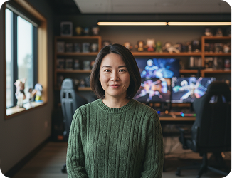
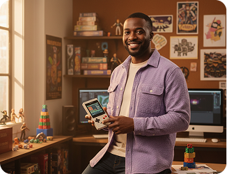
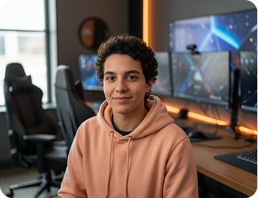

SageSloth
Our origin quest
Gaming taught us focus. Sloths taught us pace.
SageSloth is a beginner-friendly mindfulness course for players who
want calmer queues, kinder self-talk, and a reset button that works away from the screen.
+10 calm • no grind required

HOW WE PLAY
Three principles. Zero wellness side quests.
01
Tiny resets win
A useful practice fits between matches. We teach
breaths, body checks, and attention cues in two to ten minutes.
02
No perfect streaks
Missed a day? Respawn. Progress is noticing sooner—not
maintaining an impossible daily combo.
03
Keep the joy
Mindfulness is not about becoming less competitive. It
helps you play hard without carrying the tilt.
MEET YOUR PARTY
Guides who know the boss fight
Built by meditation teachers, game designers, and people who have
absolutely rage-quit.

Mara Chen
MINDFULNESS LEAD
Breathwork teacher, support main, and maker of the 90-second queue
reset.

Dev Okafor
GAME DESIGNER
Turns behavioral science into quests that feel human, useful, and
never preachy.

Sol Rivera
COMMUNITY GUIDE
Former esports coach helping players recover focus after difficult
matches.
Notes from the guild
See all field notes →
RESPAWN JOURNAL
Why a 90-second pause can save your next match
A practical look at nervous-system resets between rounds.
Read note →
COZY INPUT
SageSloth makes mindfulness feel like a game you can finish
Small lessons, useful language, and refreshingly little guilt.
Read note →
PATCH NOTES
The anti-tilt toolkit every squad should try
Five shared cues for calmer comms and cleaner decisions.
Read note →